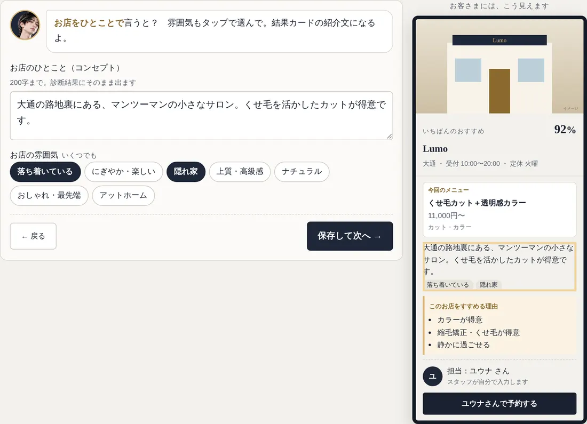
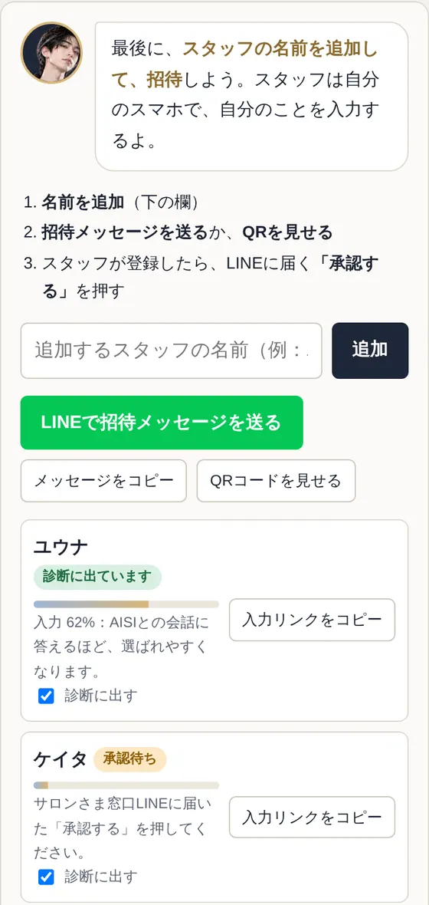
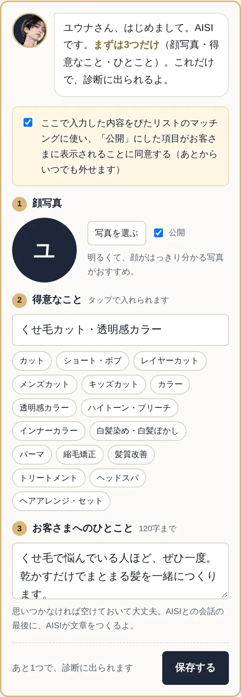
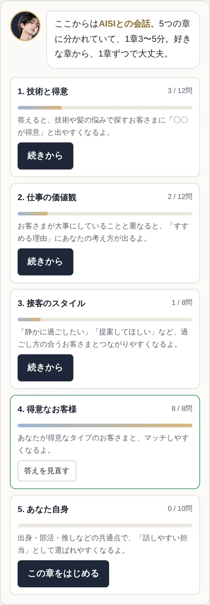

登録は、3ステップだけ。
アプリのインストールもパスワードもいりません。
LINEと、LINEの中で開く登録ページだけで終わります。
お店のこと
管理者・約10分
スタッフを招待
管理者・1分
スタッフが自分のことを入力
1人5分〜
はじめに：LINEで相談して、プランを決める

プランが決まると、サロンさま窓口のLINEに「登録をはじめる」ボタンが届きます。押して「管理者」を選ぶと、お店の登録ページのリンクが届きます。
お店のことを、
5つの画面で入れる
1画面に1つのことだけ。右（スマホでは下）に、お客さまに見える診断結果の見本が出て、いま入れている場所が光ります。
- 写真：外観を1枚（店内はあとでOK）
- 基本：住所・営業時間・定休日
- 一押しメニュー：まず1つ（名前・料金・種類）
- ひとこと：お店のコンセプトと雰囲気
- 得意なこと：得意なものだけタップ
「保存して次へ」で自動で保存されます。上の「診断に出る準備：あと〇つ」がゼロになれば準備完了。運営が確認して、診断に出します。メニュー2・3やアピールは「もっと選ばれるために」から、あとで足せます。

スタッフを招待する
登録ページの最後の画面「スタッフを招待」で、次の順に進めます。
- スタッフの名前を追加
- 「LINEで招待メッセージを送る」で転送する。お店で直接なら「QRコードを見せる」
- スタッフが登録すると、管理者のLINEに「承認する」が届くので押す
スタッフごとに「招待中 → 承認待ち → 入力中 → 診断に出ています」と表示されるので、誰がどこまで進んだかひと目で分かります。サロンさま窓口のトークで「招待」と送っても、招待メッセージとQRコードが出ます。

スタッフが、
自分のことを入れる
承認されると、スタッフのLINEに本人だけのページのリンクが届きます。
- 最初の3つ（顔写真・得意なこと・ひとこと）。これだけで診断に出られます
- あとはAISIとの会話。5つの章（1章3〜5分）に分かれていて、好きな章から1章ずつでOK
- 答えるほど、見本の「すすめる理由」が増えていきます
出身・推し・部活などは、項目ごとに「公開」を外せます。外した項目はマッチングにだけ使い、画面には出ません。


あとから直すとき・困ったとき
サロンさま窓口LINEの下のメニューお店情報を編集（管理者だけ）
同じメニューの自分のプロフィール（スタッフ本人）
トークで招待と送る。登録ページの「スタッフを招待」からも
トークでスタッフの管理→ その人の「外す」。予約が届かなくなり、スタッフ料金にも数えません
トークでスタッフの管理→「管理者にする」
メニューの空き日を登録。診断結果に「空きあり」が出ます
トークで休止か解約と送ると、運営に届きます
トークで招待→「コードを作り直す」。古いものは使えなくなります